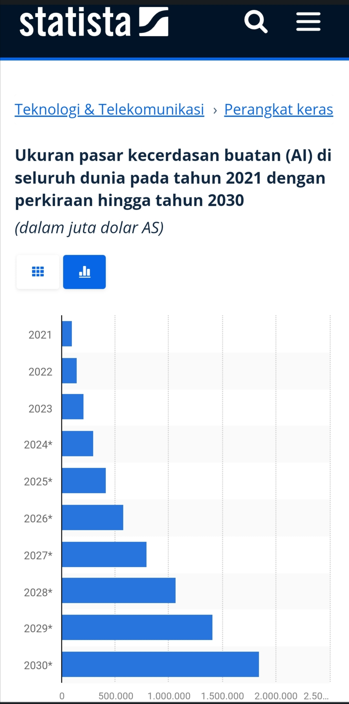

Artificial Intelligence Diprediksi Terus Tumbuh, Puncaknya Di Tahun 2030

Kecerdasan buatan (AI) terus menunjukkan pertumbuhan yang mengagumkan dan diperkirakan akan terus
berkembang pesat di masa depan.
Menurut laporan dari Next Move Strategy Consulting yang dikutip dalam stasista.com, diperkirakan nilai
industri kecerdasan buatan akan mencapai hampir 100 miliar dolar AS pada tahun 2030, meningkat hingga 20
kali lipat hingga hampir dua triliun dolar AS.

Industri kecerdasan buatan telah mengalami lonjakan signifikan dalam beberapa tahun terakhir. Penggunaan
AI telah merasuki berbagai sektor, termasuk teknologi, kesehatan, keuangan, dan lainnya. Inovasi terus
mendorong pertumbuhan dan memperluas cakupan aplikasi AI.
Berdasarkan laporan dari Next Move Strategy Consulting, industri kecerdasan buatan diharapkan mencapai
nilai hampir 100 miliar dolar AS pada tahun 2030. Prediksi ini memperlihatkan kenaikan sekitar 20 kali
lipat dari nilai saat ini. Faktor-faktor seperti peningkatan investasi, inovasi teknologi, dan adopsi
yang lebih luas oleh berbagai sektor akan menjadi pendorong utama pertumbuhan ini.
Pertumbuhan pesat kecerdasan buatan akan membawa dampak signifikan di berbagai sektor ekonomi. Misalnya,
di sektor kesehatan, AI dapat meningkatkan diagnosis dan pengobatan.
Di bidang otomotif, penggunaan teknologi otonom dapat meningkatkan keamanan dan efisiensi. Selain itu,
di sektor keuangan, AI dapat memperbaiki analisis risiko dan mengoptimalkan investasi. Karena pasar AI
mencakup sejumlah besar industri.
Segala sesuatu mulai dari rantai pasokan, pemasaran, pembuatan produk, penelitian, analisis, dan banyak
lagi adalah bidang-bidang yang dalam beberapa aspek akan mengadopsi kecerdasan buatan dalam struktur
bisnis mereka.
Chatbot, AI penghasil gambar, dan aplikasi seluler merupakan beberapa tren utama yang meningkatkan AI di
tahun-tahun mendatang.
Inovasi teknologi, termasuk pengembangan algoritma yang lebih canggih, penggunaan data yang lebih besar,
dan kemajuan dalam komputasi awan, akan menjadi pendorong utama di balik pertumbuhan ini. Perusahaan dan
peneliti terus berinvestasi dalam mengembangkan teknologi AI yang lebih kuat dan efisien.
Sementara pertumbuhan ini menjanjikan banyak manfaat, ada juga tantangan dan pertimbangan etika yang
perlu diperhatikan. Pengelolaan data dengan bijak, memastikan keamanan privasi, dan mengatasi potensi
bias dalam algoritma adalah beberapa hal yang harus diatasi seiring dengan perkembangan AI.
Dengan pertumbuhan yang diprediksi bakal melesat, kecerdasan buatan diperkirakan akan menjadi kekuatan
dominan dalam ekonomi global. Dengan nilai hingga hampir dua triliun dolar AS pada tahun 2030
menunjukkan betapa pentingnya teknologi ini dalam berbagai sektor.
Namun, dengan pertumbuhan ini juga muncul tanggung jawab untuk memastikan penggunaan AI yang etis dan
berkelanjutan.
Sumber:
Selular.id
Blockchain: Mengubah Landasan Teknologi Menuju Era Transparansi dan Keamanan

Blockchain adalah teknologi revolusioner yang telah mengubah paradigma tradisional tentang bagaimana
data dan informasi disimpan, dikelola, dan dipertukarkan. Dengan menggunakan struktur data
terdesentralisasi dan enkripsi yang kuat, blockchain telah memberikan fondasi baru untuk sistem keamanan
dan transparansi dalam berbagai sektor, dari keuangan hingga logistik dan kesehatan. Blockchain telah
menjadi inti dari cryptocurrency dan juga menyediakan kerangka kerja untuk berbagai aplikasi inovatif.
Definisi dan Konsep Blockchain
Blockchain adalah jaringan terdesentralisasi yang menyimpan data secara transparan dan aman dalam
blok-blok terhubung yang saling terkait. Setiap blok berisi serangkaian transaksi dan memiliki tanda
waktu yang diverifikasi secara kriptografi. Data dalam blok tidak dapat diubah atau dihapus tanpa
persetujuan mayoritas jaringan, sehingga memastikan keamanan dan integritas data.
Konsep Utama dalam Blockchain
- Desentralisasi: Tidak ada otoritas sentral yang mengendalikan blockchain. Data disimpan dan dikelola
oleh banyak node yang terdistribusi di seluruh jaringan.
- Transparansi: Semua transaksi dan perubahan data dapat dilihat oleh semua peserta jaringan. Ini
menciptakan tingkat transparansi yang tinggi dan meminimalkan risiko kecurangan.
- Keamanan Kriptografi: Setiap blok dalam blockchain memiliki tanda waktu dan tautan ke blok
sebelumnya dengan kode kriptografi yang kuat, sehingga menjaga integritas data dan mencegah
perubahan yang tidak sah.
Penerapan Blockchain dalam Berbagai Bidang
- Keuangan dan Cryptocurrency: Blockchain adalah landasan untuk cryptocurrency seperti Bitcoin dan
Ethereum, memungkinkan transaksi dan pembayaran yang aman dan transparan tanpa melibatkan lembaga
keuangan tradisional.
- Logistik dan Rantai Pasokan: Dalam industri logistik, blockchain memastikan jejak lengkap dari
sumber hingga tujuan, mengoptimalkan rantai pasokan dan memastikan keaslian produk.
- Kesehatan: Dalam bidang kesehatan, blockchain dapat digunakan untuk menyimpan data medis dengan aman
dan memberikan akses yang terkontrol kepada pasien dan tenaga medis.
- Voting Elektronik: Blockchain dapat digunakan untuk memastikan integritas dan keabsahan suara dalam
sistem voting elektronik.
- Konten Digital: Dalam industri hiburan, blockchain memungkinkan distribusi dan lisensi konten
digital dengan adil dan aman.
Tantangan dalam Implementasi Blockchain
- Skalabilitas: Menjaga kinerja dan kecepatan transaksi dalam jaringan blockchain yang besar adalah
tantangan teknis yang harus diatasi
- Regulasi dan Keamanan: Beberapa aspek hukum dan keamanan blockchain masih menjadi perhatian,
terutama terkait dengan keamanan data pribadi dan peraturan di berbagai negara.
- Kesadaran dan Pendidikan: Peningkatan kesadaran dan pemahaman tentang teknologi blockchain di
kalangan masyarakat dan bisnis sangat penting untuk penerapan yang lebih luas.
Kesimpulan
Blockchain adalah teknologi yang membuka pintu menuju era baru dalam keamanan dan transparansi data.
Dengan landasan desentralisasi, blockchain telah merevolusi berbagai sektor dan memberikan potensi yang
tak terbatas untuk inovasi dan kemajuan masa depan. Meskipun masih ada beberapa tantangan yang harus
diatasi, seperti skalabilitas dan regulasi, potensi blockchain untuk menciptakan perubahan yang positif
dalam cara kita berinteraksi dengan data dan informasi sangat menjanjikan. Dalam beberapa tahun
mendatang, blockchain akan terus menjadi pendorong transformasi digital yang kuat dan memberikan manfaat
besar bagi masyarakat global
Sumber: Infinitech
Tokoh Inspirasi Cristiano Ronaldo: Humanity dan Good Personality

Siapa yang tidak mengenal sosok pemain bola yang punya segudang prestasi luar biasa, dia adalah
Christiano Ronaldo. Christiano Ronaldo yang lebih akrab dipanggil dengan CR7 oleh semua fans dan pecinta
sepak bola diseluruh dunia, prestasi yang melimpah dan kekayaan yang lumayan tidak membuat lelaki tampan
ini jumawa akan segala apa yang ia punya.
CR7 tetaplah manusia yang memiliki hati dan perasaan manusia lainnya, ketika ada sebuah peristiwa yang
terjadi dibelahan negeri lain. Ia selalu menjadi orang nomor satu untuk langsung turun ke lapangan dan
membantu para korban yang tertimpa musibah atau kemalangan.
Kita semua pasti ingat dikala Tsunami Aceh melanda negeri ini pada tahun 2004, ada seorang anak yang
bernama Martunis selamat dari bencana maha dahsyat itu dengan memakai kaos jersey CR7. Sontak berita itu
viral hingga sampai ke telingan sang idola pemain terhebat dunia, lalu ia meluangkan waktu untuk bisa
bertemu Martunis.
Siapa sangka Martunis lalu diangkat oleh CR7 sebagai anak asuhnya. Martunis kini tumbuh seperti anak
muda lainnya, yang memiliki cita-cita yang sama seperti anak-anak kecil pada umumnya. Ia ingin menjadi
pemain sepak bola, seperti ayah angkatnya Christiano Ronalo.
Tak sampai disitu CR 7 juga memiliki nilai social yang tinggi dan humanity yang sangat menyentuh, pada
saat laga ia bertanding dengan Israel. CR7 tidak mau sama sekali menjabat tangan atau pun menukar baju
jersey dengan pemain lawan setelah laga selesai, karena ia tahu negara Israel merupakan negara yang yang
menjajah tanah pemukiman negeri palestina.
CR7 membuat kejutan lagi dengan menjual satu sepatu emas yang diperolehnya sebagai pemain terbaik dikala
itu, untuk penggalangan dana bantuan humanity atas rakyat palestina yang dijajah oleh negara Israel.
Semua penggemarnya berdencak kagum atas kemurahan hati, dan kebaikan personality yang dimiliki seorang
mega bintang sepak bola dunia.
Dengan segala kebaikan yang telah ia lakukan, tak heran jika ia mendapatkan good news yaitu memiliki
followers Instagram terbanyak diseluruh dunia, dengan anggota 300 juta followers diseluruh negeri. Dari
hal ini kita bisa mencontoh kebaikan itu dan belajar dari seseorang bisa sama siapa saja termasuk CR 7
ini.
Hal yang paling lucu lagi terjadi baru-baru ini, tersebar sebuah video singkat yaitu CR 7 sedang ada
sesi wawancara bersama emdia, didepannya ada dua botol minuman soda dan satu botol minuman air mineral
biasa. CR 7 kemudian menyingkirkan dua botol minuman soda dan seraya mengarhakan air putih ke media
mengisyaratkan bahwa "minum air putih lebih baik dari pada minuman soda".
Sontak berita itu viral dan dengan pengaruh sang idola, saham minuman soda anjlok fantastis mengalami
kerugian besar. Itulah pengaruh sang idola yang baik untuk para penggemarnya, hanya dengan berupa
tindakan belum dengan melakukan ucapan sudah sampai segitu respond dan efek yang di dapat.
Dari sosok CR 7 kita bisa belajar sikap rendah hati dan kebaikan yang ia sebarkan kepada kita semua,
walau sebenarnya ia tidak ingin disorot media namun sosok pengaruh beliau sungguh menggerakkan orang
lain untuk bisa melakukan kebaikan yang sama dengan saling berbagi dengan sesame.
Biasanya kita melihat para figure yang terkenal apabila ketemu dengan fans lumayan susah, namun berbeda
halnya dengan CR 7 yang baik perlakuannya terhadap penggemarnya.
Biasanya seorang public figure terkenal pasti memiki bodyguard sebagai pengamannya, namun hal itu
berbeda jauh dengan CR7 yang mau berhadapan langsung dengan penggemanya.
Ia tidak ingin membuat para penggemarnya kecewa dengan perlakuan tim pengaman, ia pasti langsung datang
ke penggemarnya langsug untuk hanya sekedar tanda tangan dan berfoto bersama.
Sumber: Kompasiana